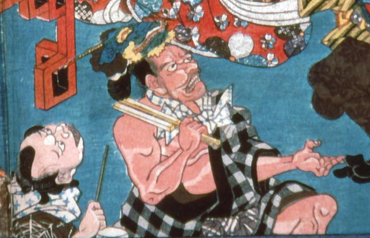

片肌脱ぎの男がかぶっている、鬼の面。青鬼で、鋭い角と金色の顎ひげが特徴的である。
著作者：歌川国貞／出典：親書誌：A5_pushkin_0029：（酒天童子の酒宴；シュテンドウジノシュエン）／日付：2011／資源識別子：A5_pushkin_0029_0001_0000
Copyright (c)2010- International Research Center for Japanese Studies, Kyoto, Japan. All rights reserved.